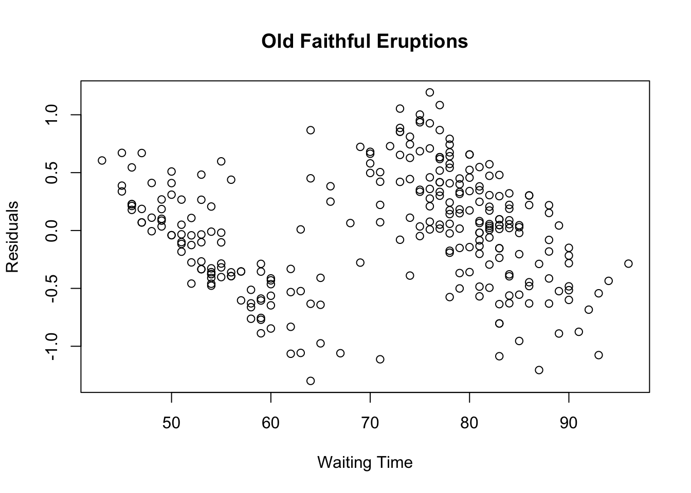

Chapter 7 Simple Regression in R
7.1 Estimating a Simple Linear Regression Model
If we choose the parameters \(\beta_0\) and \(\beta_1\) in the simple linear regression model so as to minimize the sum of squares of the error term \(\epsilon\), we will have the so called estimated simple regression equation. It allows us to compute fitted values of \(y\) based on values of \(x\). \[ \hat{y} = \hat{b}_0 + \hat{b}_1 x \]
Problem: Apply the simple linear regression model for the data set faithful, and estimate the next eruption duration if the waiting time since the last eruption has been 80 minutes.
Solution: We apply the
lmfunction to a formula that describes the variable eruptions by the variable waiting, and save the linear regression model in a new variableeruption_lm.
eruption_lm <- lm(eruptions ~ waiting, data = faithful)- Then we extract the parameters of the estimated regression equation with the coefficients function.
coeffs <- coefficients(eruption_lm)
coeffs## (Intercept) waiting
## -1.87401599 0.07562795- We now fit the eruption duration using the estimated regression equation.
waiting <- 80 # the waiting time
duration <- coeffs[1] + coeffs[2]*waiting
duration## (Intercept)
## 4.17622- Alternative Solution: We wrap the waiting parameter value inside a new
data.framenamednewdata.
newdata <- data.frame(waiting = 80) # wrap the parameter
newdata## waiting
## 1 80- Then we apply the predict function to
eruption_lmalong withnewdata.
predict(eruption_lm, newdata)## 1
## 4.176227.2 Coefficients of Determination
The coefficient of determination of a linear regression model is the quotient of the variances of the fitted values and observed values of the dependent variable. If we denote \(y_i\) as the observed values of the dependent variable, \(\overline{y}\) as its mean, and \(y_i\) as the fitted value, then the coefficient of determination is: \[ r = \frac{\sum_{i = 1}^N(y_i - \overline{y})(x_i - \overline{x})}{\sum_{i = 1}^N(x_i - \overline{x}^2)}. \]
Problem: Find the coefficient of determination for the simple linear regression model of the data set faithful.
Solution: We apply the
lmfunction to a formula that describes the variable eruptions by the variable waiting, and save the linear regression model in a new variableeruption_lm.
eruption_lm <- lm(eruptions ~ waiting, data=faithful)- Then we extract the coefficient of determination from the
r.squaredattribute of its summary.
summary(eruption_lm)$r.squared ## [1] 0.81146087.2.1 Significance Test of Simple Linear Regression
Assume that the error term \(\epsilon\) in the linear regression model is independent of \(x\), and is normally distributed, with zero mean and constant variance. We can decide whether there is any significant relationship between \(x\) and \(y\) by testing the null hypothesis that \(\beta_1 = 0\).
Problem: Decide whether there is a significant relationship between the variables in the linear regression model of the data set faithful at .05 significance level.
Solution: We apply the
lmfunction to a formula that describes the variable eruptions by the variable waiting, and save the linear regression model in a new variableeruption_lm.
eruption_lm <- lm(eruptions ~ waiting, data = faithful)- Then we print out the statistics for the significance tests with the
summaryfunction.
summary(eruption_lm)##
## Call:
## lm(formula = eruptions ~ waiting, data = faithful)
##
## Residuals:
## Min 1Q Median 3Q Max
## -1.29917 -0.37689 0.03508 0.34909 1.19329
##
## Coefficients:
## Estimate Std. Error t value Pr(>|t|)
## (Intercept) -1.874016 0.160143 -11.70 <2e-16 ***
## waiting 0.075628 0.002219 34.09 <2e-16 ***
## ---
## Signif. codes: 0 '***' 0.001 '**' 0.01 '*' 0.05 '.' 0.1 ' ' 1
##
## Residual standard error: 0.4965 on 270 degrees of freedom
## Multiple R-squared: 0.8115, Adjusted R-squared: 0.8108
## F-statistic: 1162 on 1 and 270 DF, p-value: < 2.2e-167.3 Confidence Interval for Simple Linear Regression
Assume that the error term \(\epsilon\) in the linear regression model is independent of \(x\), and is normally distributed, with zero mean and constant variance. For a given value of \(x\), the interval estimate for the mean of the dependent variable, \(\overline{y}\), is called the confidence interval.
Problem: In the data set faithful, develop a 95% confidence interval of the mean eruption duration for the waiting time of 80 minutes.
Solution: We apply the
lmfunction to a formula that describes the variable eruptions by the variable waiting, and save the linear regression model in a new variableeruption_lm.
eruption_lm <- lm(eruptions ~ waiting, data = faithful)- Then we create a new
data.framethat set the waiting time value.
newdata <- data.frame(waiting = 80)- We now apply the
predictfunction and set the predictor variable in thenewdataargument. We also set the interval type as “confidence”, and use the default 0.95 confidence level.
predict(eruption_lm, newdata = newdata, interval = "confidence") ## fit lwr upr
## 1 4.17622 4.104848 4.2475927.4 Prediction Interval for Simple Linear Regression
Assume that the error term \(\epsilon\) in the simple linear regression model is independent of \(x\), and is normally distributed, with zero mean and constant variance. For a given value of \(x\), the interval estimate of the dependent variable \(y\) is called the prediction interval.
Problem: In the data set faithful, develop a 95% prediction interval of the eruption duration for the waiting time of 80 minutes.
Solution: We apply the
lmfunction to a formula that describes the variable eruptions by the variable waiting, and save the linear regression model in a new variableeruption_lm.
eruption_lm <- lm(eruptions ~ waiting, data = faithful)- Then we create a new
data.framethat set the waiting time value.
newdata <- data.frame(waiting = 80)- We now apply the
predictfunction and set the predictor variable in thenewdataargument. We also set the interval type as “confidence”, and use the default 0.95 confidence level.
predict(eruption_lm, newdata = newdata, interval = "predict") ## fit lwr upr
## 1 4.17622 3.196089 5.1563517.5 Residual Plot
The residual data of the simple linear regression model is the difference between the observed data of the dependent variable \(y\) and the fitted values \(\hat{y}\).
Problem: Plot the residual of the simple linear regression model of the data set faithful against the independent variable waiting.
Solution: We apply the
lmfunction to a formula that describes the variable eruptions by the variable waiting, and save the linear regression model in a new variableeruption_lm. Then we compute the residual with theresidfunction.
eruption_lm = lm(eruptions ~ waiting, data = faithful)
eruption_res = resid(eruption_lm)
eruption_res## 1 2 3 4 5
## -0.500591902 -0.409893203 -0.389452162 -0.531916787 -0.021359589
## 6 7 8 9 10
## 0.597478849 -0.081243433 -0.954359589 -0.033009359 -0.204359589
## 11 12 13 14 15
## -0.376893203 -0.561731642 0.175036046 0.069502433 0.296896306
## 16 17 18 19 20
## 0.108362693 -1.064916787 0.321268358 -0.458637307 0.149408098
## 21 22 23 24 25
## -0.183009359 0.069502433 -0.574963954 -0.277312422 0.810547838
## 26 27 28 29 30
## -0.803103694 -0.318521151 0.209291942 -0.174963954 0.332408098
## 31 32 33 34 35
## 0.653175786 0.517663994 0.249571422 -0.143219850 0.110547838
## 36 37 38 39 40
## -0.041637307 0.110874485 0.656780150 -0.755032943 -0.149499329
## 41 42 43 44 45
## 0.173780150 -0.629404995 0.088268358 -0.762404995 0.886175786
## 46 47 48 49 50
## -1.086103694 0.866827317 -0.034265255 0.305524254 -0.588032943
## 51 52 53 54 55
## 1.001919890 -0.216499329 -0.376893203 0.656780150 -0.476893203
## 56 57 58 59 60
## 0.479896306 0.221431682 -1.299172683 0.617663994 0.065152202
## 61 62 63 64 65
## -0.355032943 0.021268358 -0.006125515 0.472524254 -0.846660891
## 66 67 68 69 70
## -0.683755225 0.142036046 0.675036046 -0.974800630 1.053175786
## 71 72 73 74 75
## -0.294475746 -0.394149099 0.399408098 0.504431682 -0.831916787
## 76 77 78 79 80
## 1.193291942 -0.646660891 0.542036046 0.009291942 -0.803103694
## 81 82 83 84 85
## 0.334919890 0.005524254 0.680059630 -0.408800630 0.420175786
## 86 87 88 89 90
## 0.151756567 0.076291942 0.340780150 0.410874485 -0.629987537
## 91 92 93 94 95
## -0.463660891 -0.599499329 -0.040381411 0.792036046 -1.057544735
## 96 97 98 99 100
## 0.728803734 0.188268358 -0.048080110 -0.116009359 0.572524254
## 101 102 103 104 105
## -0.331916787 -0.414243433 0.268246537 0.096896306 -0.201847798
## 106 107 108 109 110
## 0.186502433 0.221268358 -0.275637307 0.220012463 -0.568847798
## 111 112 113 114 115
## 0.934919890 -0.288032943 0.043128619 0.316408098 -0.888032943
## 116 117 118 119 120
## 0.381152202 0.409618589 0.045640411 -0.771032943 -0.288615485
## 121 122 123 124 125
## 0.482734745 0.722687578 0.300663994 -0.394149099 -0.181243433
## 126 127 128 129 130
## -0.484847798 0.387758329 0.172524254 -0.018521151 -0.282499329
## 131 132 133 134 135
## 0.337758329 -0.236103694 0.438850901 -0.523871381 0.228130381
## 136 137 138 139 140
## 0.055524254 -0.100009359 0.303012463 -0.101265255 -0.367591902
## 141 142 143 144 145
## -0.018847798 -0.430660891 0.205524254 0.867663994 0.459291942
## 146 147 148 149 150
## -0.605032943 0.456780150 0.185246537 -0.286267017 -0.334265255
## 151 152 153 154 155
## 1.083663994 0.050663994 -0.641800630 0.348152202 0.071431682
## 156 157 158 159 160
## 0.580059630 0.248152202 -1.076383173 -0.334265255 -0.889871381
## 161 162 163 164 165
## 0.670758329 -0.479987537 -0.512404995 -0.191963954 0.382571422
## 166 167 168 169 170
## 0.709291942 -0.523544735 0.218756567 -0.125637307 -0.542383173
## 171 172 173 174 175
## 0.085246537 -0.353777047 0.633663994 0.064315526 -0.084847798
## 176 177 178 179 180
## 0.081152202 0.853175786 0.509618589 -0.554359589 0.444547838
## 181 182 183 184 185
## -0.402521151 0.633663994 -0.153103694 -0.636103694 0.049990641
## 186 187 188 189 190
## 0.408036046 -0.395731642 0.228130381 0.013896306 -0.102521151
## 191 192 193 194 195
## 0.548152202 -0.603777047 0.926291942 -0.378731642 0.016663994
## 196 197 198 199 200
## -0.018847798 -1.205615485 0.416663994 0.266990641 0.642036046
## 201 202 203 204 205
## -0.563660891 0.022524254 -0.875127277 -0.267265255 0.575036046
## 206 207 208 209 210
## 0.178130381 0.417663994 -0.628731642 0.101246537 0.096896306
## 211 212 213 214 215
## -1.112568318 0.523780150 0.035246537 0.034919890 0.450827317
## 216 217 218 219 220
## 0.359291942 0.265734745 -0.435011121 -0.285521151 0.276291942
## 221 222 223 224 225
## -0.040381411 -0.060475746 -0.459893203 0.684919890 -0.024963954
## 226 227 228 229 230
## 0.016408098 0.058036046 0.242036046 0.497059630 0.449408098
## 231 232 233 234 235
## 0.663059630 0.207106797 -0.446987537 0.309618589 -0.482499329
## 236 237 238 239 240
## -0.326893203 -0.359893203 0.333663994 -0.150591902 -0.633172683
## 241 242 243 244 245
## 0.351919890 0.669502433 0.303012463 0.009455265 0.028640411
## 246 247 248 249 250
## -0.494475746 -0.353777047 0.039524254 -1.060056526 0.627547838
## 251 252 253 254 255
## -0.009893203 0.046896306 -0.079824214 0.853175786 -0.631243433
## 256 257 258 259 260
## -0.359219850 0.421431682 0.046896306 -0.361149099 0.182408098
## 261 262 263 264 265
## 0.742036046 0.054268358 -0.662404995 -0.153103694 0.605014224
## 266 267 268 269 270
## -0.413660891 0.951919890 -0.134847798 0.545130381 -0.515499329
## 271 272
## 0.212130381 0.744547838- We now plot the residual against the observed values of the variable waiting.
plot(faithful$waiting, eruption_res,
ylab = "Residuals", xlab = "Waiting Time",
main = "Old Faithful Eruptions") 